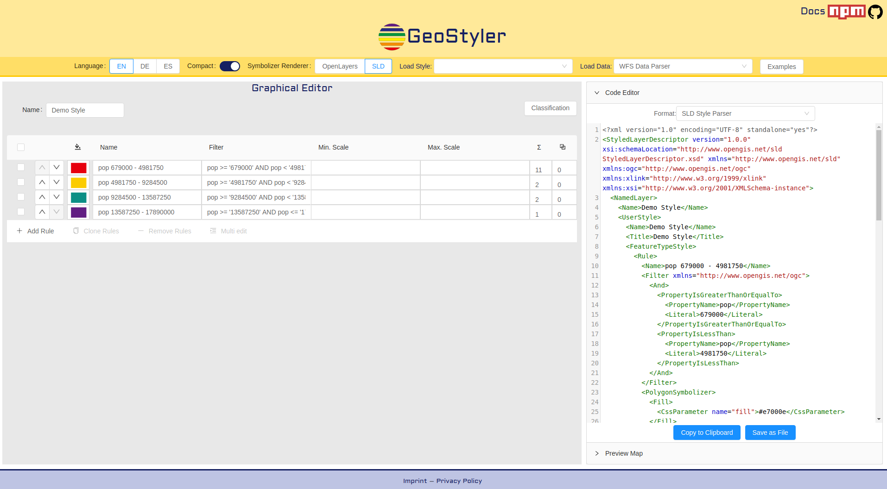

GeoStyler¶
GeoStyler ist eine Open Source JavaScript-Bibliothek, mit der Benutzer Karten mit Hilfe einer grafischen Benutzeroberfläche gestalten können. Das Ziel von GeoStyler ist eine universell anwendbare GUI, die jedes beliebigen Stilformat unterstützt - sei es SLD, QML, OpenLayers, etc.
GeoStyler stellt eine Reihe von UI-Komponenten für das Kartenstyling bereit. Wie ein modulares Bausteinsystem können alle Komponenten zusammengestellt werden, um eine ansprechende Benutzeroberfläche für Ihre Webanwendungen zu erstellen. Um die Einrichtung zu vereinfachen, stellen wir einige übergeordnete Komponenten (basierend auf unseren Bausteinen) bereit, die bereits die Arbeit für Sie erledigen. Dazu gehören unter anderem Symbolizer-Editoren, RuleTables und ein vollwertiger Stil-Editor mit Filtern und maßstabsabhängiger Darstellung.
Darüber hinaus ermöglicht GeoStyler die Übersetzung zwischen mehreren Styling-Formaten, z.B. SLD, OpenLayers, QGIS, Mapbox. Da wir dem Konzept der Mikropakete folgen, können diese Übersetzer (wir nennen sie Parser) als eigenständige Bibliotheken verwendet werden, ohne dass die UI-Komponenten als Abhängigkeit eingeschlossen werden müssen. Derzeit haben wir Parser für SLD, QGIS-Stile, Mapbox-Stile und OpenLayers-Stile. Das Übersetzen von Mapfiles ist in Arbeit. Bitte werfen Sie einen Blick auf die StyleParser-Implementierungen. Da das Attributiv-Styling von Geodaten einfacher ist, wenn Sie sich die zu stylenden Daten ansehen können, können wir eine Verbindung mit mehreren Datenquellen wie WFS, Shape- und GeoJSON-Dateien herstellen. Wir planen die Unterstützung für das Geopackage-Format.
{kind=link}
Kernfunktionen¶
- Generisch - nicht an ein Format gebunden
- Direkte Unterstützung gängiger Formate (z.B. SLD, QGIS)
- Grafische Benutzeroberfläche (GUI) einschließlich der Unterstützung für die Neuanordnung von Regeln, eine Kartenansicht, Farb- und Symbolauswahl und vieles mehr
- Verfügt über eine GUI - aber Sie müssen sie nicht verwenden
- Erweiterbar - Sie sind eingeladen, Ihre eigenen Datenleser oder Parser zu erstellen
- Das Projekt wächst weiter - wir planen neue Funktionen (wie eine Befehlszeilenschnittstelle, weitere Parser usw.) und kleine Verbesserungen
Implementierte Standards¶
Details¶
Webseite: https://geostyler.org
Lizenz: BSD-2-Clause
Software Version: 4.6.0
API Interfaces: JavaScript
Support: Meldungen unter https://github.com/geostyler/geostyler
Entwickler: https://github.com/geostyler/geostyler/graphs/contributors